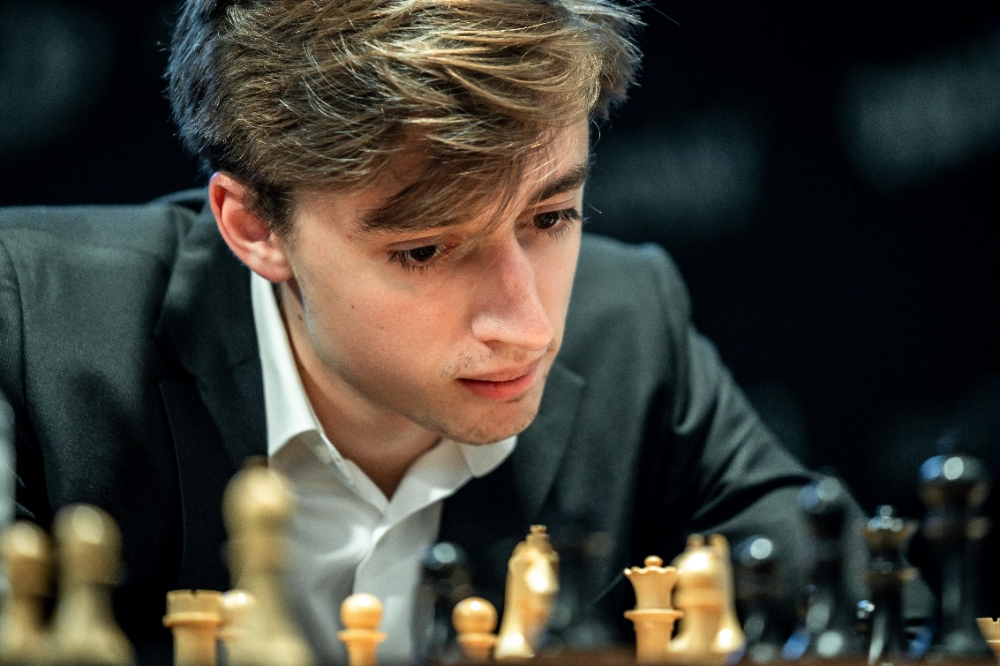

I am also a fan of chess and hope to compete in some over the board tournaments when I can - hopefully achieving a title at some point.
My favourite openings are the catalan for white and the sicilian for black as they are both deeply theortical lines; making the game more exciting and challenging.
Daniil Dubov is probably my favourite active player if I had to choose, purely because of his incredible queen sacrifice against Sergey Karjakin in the Russian Championship Superfinal last year.
